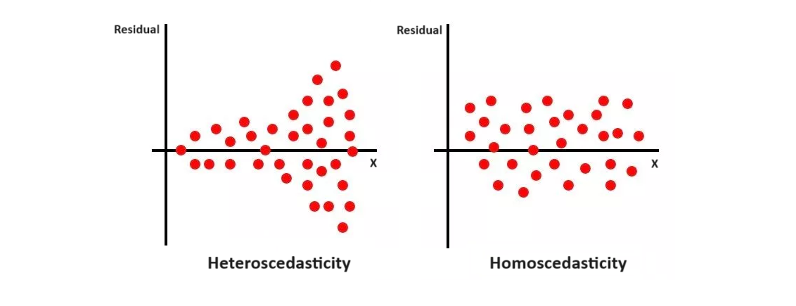

This chapter introduces multiple linear regression, which allows us to control for confounding variables. We will explore the multiple regression model, and what it means to control for a variable. Then, we will focus heavily on the Ordinary Least Squares (OLS) estimator, why it is a good estimator, and issues when it comes to causal inference.
Topics: Multiple Linear Regression, OLS with Linear Algebra, Regression Anatomy, Gauss-Markov, Unbiasedness and Consistnecy of OLS, Omitted Variable Bias and Endogeneity.
4.1: The Multiple Linear Regression Model
Before we start, make sure you have a strong understanding of all aspects of the simple linear regression model covered in chapter 1.
One of the issues with simple linear regression is that it only measures the correlation/relationship between x and y. Simple linear regression can only be used for causal estimation when used in randomised controlled experiments.
However, in the social sciences, randomisation is often not possible.
Linear regression allows us to estimate a model with both our treatment and outcome variables, as well as a series of control variables.
- We will explore the idea of “controlling” in later in section 4.4.
In theory, by including every single confounding variable as a control variable in our regression model, we can partial out the effect of confounders and find the average treatment effect.
- In reality, as we will cover later, it is often impossible to account for all confounding variables, so we may need additional techniques to account for those situations.
The response variable (outcome variable) is notated y, just like in single linear regression.
The explanatory variables are x_1, x_2, ..., x_k. We sometimes also denote all explanatory variables as the vector \overrightarrow{x}. Our treatment variable D is considered one of the explanatory variables \overrightarrow{x} (most often x_1).
A linear regression model is the specification of the conditional distribution of Y, given \overrightarrow{x} (if you do not understand this, see chapter 1). The linear regression model focuses on the expected value of the conditional distribution, notated \mathbb{E}[y_i|\overrightarrow{x}_i].
Take a set of observed data with n number of pairs of (\overrightarrow{x}_i, y_i) observations. The linear model takes the following form:
\mathbb{E}[y_i|\overrightarrow{x}_i] = \beta_0 + \beta_1 x_{1i} + ... + \beta_k x_{ki}
- Where the coefficients (that need to be estimated) are vector\overrightarrow{\beta} = \beta_0, \beta_1, ..., \beta_k.
We can also write the linear model for the value of any point y_i in our data:
y_i = \beta_0 + \beta_1x_{1i} + ... + \beta_k x_{ki} + u_i
- Where u_i is the error term function - that determines the error for each unit i. Error u_i has a variance of \sigma^2, and expectation \mathbb{E}[u_i] = 0.
In our model, x_1 is typically the treatment variable we are concerned with.
- We want to show some sort of causal relationship between x_1 and y
The other explanatory variables x_2, ..., x_k are the confounding variables we want to control for.
We will go into detail what “controlling for” means in section 4.4.
We will also discuss how to select control variables in section 4.8.
4.2: Multiple Linear Regression Model with Linear Algebra
We can also represent the multiple linear regression model in linear algebra.
Let us start with the linear model:
y_i = \beta_0 + \beta_1x_{1i} + \beta_2x_{2i} + ... + \beta_k x_{ki} + u_i
The i’th observation can be re-written in vector form as following:
y_i = x_i'\beta + u_i, \text{ where }\beta = \begin{bmatrix}\beta_0 \\ \beta_1 \\ \vdots \\ \beta_k\end{bmatrix} \text{ and }x_i = \begin{bmatrix}1 \\x_{1i} \\\vdots \\x_{ki}\end{bmatrix}
The x_i' in the equation is the transpose of x_i, to make matrix multiplication possible.
The first element of the x_i matrix is 1, since 1 \times \beta_0 gives us the first parameter (intercept) in the linear model.
Since our data has n number of observations i, we can express this into vector form, with the X_i' and \beta being vectors within a vector.
\begin{split} \begin{pmatrix}y_1 \\ y_2 \\ \vdots \\ y_n\end{pmatrix} & = \begin{pmatrix}x_1'\beta + u_1 \\ x_2'\beta + u_2 \\ \vdots \\ x_n'\beta + u_n\end{pmatrix} \\ & \\ & = \begin{pmatrix}x_1'\beta \\ x_2'\beta \\ \vdots \\ x_n'\beta\end{pmatrix} + \begin{pmatrix}u_1 \\ u_2 \\ \vdots \\ u_n\end{pmatrix} \end{split}
Since \beta vector appears as a common factor for all observations i=1,...,n, we can factor it out and have an equation:
\begin{pmatrix}y_1 \\ y_2 \\ \vdots \\ y_n\end{pmatrix} = \begin{pmatrix}x_1' \\ x_2' \\ \vdots \\ x_n'\end{pmatrix} \space \beta + \begin{pmatrix}u_1 \\ u_2 \\ \vdots \\ u_n\end{pmatrix}
We can expand the x_1',...,x_n' vector into a matrix. Remember that each x_1',...,x_n' is already a vector of different explanatory variables. So, we get the following result:
The multiple linear regression can be expressed in linear algebra as:
y = X \beta + u, \text{ where } X = \begin{bmatrix}1 & x_{21} & \dots & x_{k1} \\1 & x_{22} & \dots & x_{k2} \\\vdots & \vdots & \vdots & \vdots \\1 & x_{2n} & \dots & x_{kn}\end{bmatrix}
Where the notation for elements of X is x_{ki}, with i being the unit of observation i = 1, \dots n, and k being the explanatory variables index.
Where y and u are n \times 1 vectors (as seen above), and \beta is a k \times 1 vector.
The first row of X is a vector of 1, which exists because these 1’s are multiplied with \beta_0 in our model.
The point of expressing the model in linear algebra is that it makes the estimation process far easier, as we will see in the next section.
4.3: Ordinary Least Squares Estimator for Multiple Regression
As we remember from Chapter 1, the goal of Ordinary Least Squares Estimation is to minimise the sum of squared errors. The sum of squared errors in multiple regression is:
\begin{split} SSE & = \sum\limits_{i=1}^n (y_i - \hat y_i)^2\\ & = \sum\limits_{i=1}^n (y_i - \hat{\beta}_0 - \hat{\beta}_1x_{1i} - \hat{\beta}_2x_{2i} - ... - \hat\beta_kx_{ki})^2 \end{split}
Similar to our simple linear regression (but with additional variables), our minimisation condition is:
\begin{split} (\hat{\beta}_0, \hat{\beta}_1, \hat{\beta}_2, ...) & = \arg \min\limits_{(\hat{\beta}_0, \hat{\beta}_1, \hat{\beta}_2, ...)} (y_i - \hat{\beta}_0 - \hat{\beta}_1x_{1i} - \hat{\beta}_2x_{2i} ...)^2 \\ & = \arg \min\limits_{(\hat{\beta}_0, \hat{\beta}_1, \hat{\beta}_2, ...)} S(\hat{\beta}_0, \hat{\beta}_1, \hat{\beta}_2, ...) \end{split}
Taking the partial derivatives of each parameter like in simple linear regression, we get first order conditions:
\begin{split}& \sum\limits_{i=1}^n (y_i - \hat{\beta}_0 - \hat{\beta}_1x_{1i} - \hat{\beta}_2x_{2i}...) = 0 \\& \sum\limits_{i=1}^n X_{1i}(y_i - \hat{\beta}_0 - \hat{\beta}_1x_{1i} - \hat{\beta}_2x_{2i}...) = 0 \\ & \sum\limits_{i=1}^n X_{2i} (y_i - \hat{\beta}_0 - \hat{\beta}_1x_{1i} - \hat{\beta}_2x_{2i}...) = 0 \end{split}
- and so on for x_{3i}, ..., x_{ki}.
This system of equations includes k+1 variables and k+1 equations, which is way too difficult to solve.
Instead, we can use linear algebra. Let us define our estimation vector \hat{\beta} as the value of \hat\beta that minimises the sum of squared errors:
\hat{\beta} = \arg \min\limits_{b} (y - Xb)' (y - Xb) = \arg \min\limits_b S(b)
We can expand S(b) as follows:
\begin{split} S(b) & = y'y - b'X'y - y'Xb + b'X'Xb \\ & = y'y - 2b'X'y + b'X'Xb \end{split}
Taking the partial derivative in respect to b:
\frac{\partial S(b)}{\partial b} = \begin{pmatrix}\frac{\partial S(b)}{\partial b_1} \\\vdots \\\frac{\partial S(b)}{\partial b_k}\end{pmatrix}
Differentiating with the vector b yields:
\frac{\partial S(b)}{\partial b} = -2X'y + 2X'Xb
Evaluted at \hat{\beta}, the derivatives should equal zero (since first order condition of finding minimums):
\frac{\partial S(b)}{\partial b} \biggr|_{\hat{\beta}} = -2X'y + 2X'X \hat{\beta} = 0
When assuming X'X is invertable, we can isolate \hat{\beta} to find the solution to OLS:
The Ordinary Least Squares Estimate of vector \hat\beta for multiple linear regression is:
\hat{\beta} = (X'X)^{-1} X'y
Once we have estimates of \hat{\beta}, we can plug them into our linear model to obtain fitted values:
\hat{y} = X\hat{\beta} = X(X'X)^{-1} X'y
4.4: Regression Anatomy Theory and Coefficient Interpretation
We talked about how multiple linear regression allows us to control for confounders. But what does that mean? How does it affect our interpretations of coefficients?
The Regression Anatomy Theory, also called the Frisch–Waugh–Lovell (FWL) theorem, illustrates this concept. Take our standard multivariate regression:
y_i = \beta_0 + \beta_1 x_{1i} + \beta_2 x_{2i} + ... + \beta_k x_{ki} + u_i
Let us say we are interested in x_1 (this can be generalised to any explanatory variable). Let us make x_1 the outcome variable of a regression with x_2, ..., x_k:
x_{1i} = \gamma_0 + \gamma_1 x_{2i} + ... + \gamma_{k-1}x_{ki} + \widetilde{x_{1i}}
- Where \gamma_0, ..., \gamma_{k-1} are coefficients.
The error term is \widetilde{x_{1i}}, which represents the part of x_{1i} that are uncorrelated to x_2, ..., x_k.
- In other words, \widetilde{x_{1i}} is the part of x_1 that cannot be explained by any other explanatory variable. (uncorrelated with them)
Now, take the regression of with outcome variable y, with all explanatory variables except x_1:
y_i = \delta_0 + \delta_1 x_{2i} + ... + \delta_{k-1} x_{ki} + \widetilde{y_i}
- Where \delta_0, ..., \delta_{k-1} are coefficients.
The error term is \widetilde{y_i}, which is the part of y_i that cannot be explained by x_2, ..., x_k (uncorrelated with them).
Since \widetilde{y_i} is not explained by x_2, ..., x_k, variable x_1 must be the one explaining \widetilde{y_i}.
- But, it is not the whole of x_1 explaining \tilde{y_i} - since x_1 may also correlated with x_2, ..., x_k, and the correlated parts of x_1 with x_2, ..., x_k are already picked up in the regression by the coefficients of x_2, ..., x_k.
Thus, \widetilde{y_i} must be explained by the part of x_1 that is uncorrelated and not explained by x_2, ..., x_k, which we derived earlier as \widetilde{x_{1i}}.
Thus, we can create another regression with explanatory variable \widetilde{x_{1i}} and outcome variable \widetilde{y_i}.
\widetilde{y_i} = \alpha_0 + \alpha_1 \widetilde{x_{1i}} + u_i
We can plug \widetilde{y_i} back into our regression of y_i with explanatory variables x_2 ..., x_k:
y_i = \delta_0 + \alpha_0 + \alpha_1 \widetilde{x_{1i}} + \delta_1x_{2i} + ... + \delta_{k-1} x_{ki} + u_i
As we can see, this mirrors the original standard multiple linear regression. The estimate of \alpha_1 will be the same as \beta_1 in the original regression.
- The coefficient \alpha_1 (which is equal to \beta_1) explains the expected change in y, given an increase in the part of x_1 uncorrelated with x_2, ..., x_k.
- So essentially, we have partialed out the effect of the other explanatory variables, and only focus on the effect on y of the uncorrelated part of x_1.
- This eliminates the effect of confounders on our estimates, and estimates of the effect of x_1 alone on y.
Thus, the interpretation of \beta_1, or any \beta_j multiplied to x_j, is:
- For every one unit increase in x_j, there is an expected \beta_j increase in y, when controlling for all other explanatory variables.
- Thus, we have “controlled for” and “partialled out” the effect of confounders on x_j.
Intecept \beta_0 is the expected value of y when all \overrightarrow{x} = 0.
Using the same procedure as in simple linear regression, we can run hypothesis tests on each coefficient for inference purposes (we will discuss causal inference with OLS in the next sections).
4.5: Gauss-Markov and Unbiasedness of the OLS Estimator
An unbiased estimator, if we recall from section 1.3, means that over many different estimates, the expected value of all the estimates is the true parameter value: \mathbb{E}[\hat{\theta}_i] = \theta.
Unbiasedness is desirable property of causal estimators.
The Gauss-Markov Theorem states that the ordinary least squares estimator is unbiased under 3 conditions:
- Linearity of the equation (no coefficients \beta_0, ..., \beta_k can be multiplied together. This does not apply to explanatory variables, only the coefficients.
- In a simple linear regression, x has variation (so not all values of x are the same). In a multiple linear regression, this condition becomes that there is no perfect correlation (no perfect multicollinearity) between any two explanatory variables.
- And the most important condition - Zero conditional mean: meaning that no matter the value of x, the expected value of the residual u_i is always 0. \mathbb{E}[u | x] = 0 for all x (and all explanatory variables in multiple regression).
Proof of the Unbiasedness of OLS
Before we start, here are a few key properties of summation
\begin{split}& \sum\limits_{i=1}^n (x_i - \bar{x}) = 0 \\& \sum\limits_{i=1}^n x_i(y_i - \bar{y}) = \sum\limits_{i=1}^n(x_i - \bar{x}) (y_i - \bar{y}) \\& \sum\limits_{i=1}^n x_i(x_i - \bar{x}) = \sum\limits_{i=1}^n(x_i - \bar{x})^2\end{split}
We want to show \mathbb{E}[ \hat{\beta}_1] = \beta_1. Let us start off with the OLS estimator (we will use simple linear regression for simplicity):
\hat{\beta}_1 = \frac{\sum\limits_{i=1}^n (x_i - \bar{x})(y_i - \bar{y})}{\sum\limits_{i=1}^n(x_i - \bar{x})^2}
We can expand the numerator, and since \sum(x_i - \bar{x}) \bar{y} = \bar{y} \sum(x_i - \bar{x}) = 0 (see properties of summation above), we can get:
\hat{\beta}_1 = \frac{\sum\limits_{i=1}^n (x_i - \bar{x})y_i}{\sum\limits_{i=1}^n(x_i - \bar{x})^2}
- The existence of \hat{\beta}_1 is guaranteed by condition 2 from above, since the denominator is equal to Var(x), so that must not be 0.
Now, let us play with the numerator (note the properties of summation introduced earlier):
\begin{split}\sum\limits_{i=1}^n (x_i - \bar{x})y_i & = \sum\limits_{i=1}^n(x_i - \bar{x})(\beta_0 + \beta_1 x_i + u_i) \\& = \beta_0 \sum\limits_{i=1}^n(x_i - \bar{x}) + \beta_1 \sum\limits_{i=1}^n(x_i - \bar{x}) x_i + \sum\limits_{i=1}^n (x_i - \bar{x}) u_i \\& = 0 + \beta_1 \sum\limits_{i=1}^n(x_i - \bar{x})^2 + \sum\limits_{i=1}^n(x_i - \bar{x})u_i\end{split}
Now, putting the numerator back into the equation, we simplify:
\begin{split} \hat{\beta}_1 & = \frac{\beta_1 \sum\limits_{i=1}^n(x_i - \bar{x})^2 + \sum\limits_{i=1}^n(x_i - \bar{x})u_i}{\sum\limits_{i=1}^n(x_i - \bar{x})^2} \\ & = \beta_1 + \frac{\sum\limits_{i=1}^n(x_i - \bar{x}) u_i}{\sum\limits_{i=1}^n (x_i - \bar{x})^2} \\ & = \beta_1 + \sum\limits_{i=1}^n d_i u_i \end{split}
- Where d_i = \frac{x_i - \bar{x}}{\sum (x_i - \bar{x})^2}, which is a function of random variable x.
Now we need to find the expectation \mathbb{E}[\hat{\beta}_1].
First, do not worry about d_i. What should u_i be equal to? Naturally, the best estimate of u_i is its expected utility.
\mathbb{E} (\hat{\beta}_1 | x) = \beta_1 + \sum\limits_{i=1}^n d_i \ \mathbb{E}(u_i | x)
We know by the third Gauss-Markov condition (Zero conditional mean), that \mathbb{E}[u_i | x_i] = 0. Thus, that makes the entire summation equal to 0:
\mathbb{E}(\hat{\beta}_1 | x) = \mathbb{E}(\hat{\beta}_1) = \beta_1
Thus, the ordinary least squares estimator is unbiased, given 3 conditions (linearity, variation in x, zero-conditional mean) are met.
- If conditions are met, we have an unbiased estimator in OLS for causal estimation.
- The key issue is assumption 3: Zero conditional mean \mathbb{E}[u | x] = 0, which is the most easily violated of these assumptions. We will explore this in detail in section 4.7.
4.6: Causal Inference and Consistency of OLS under Gauss-Markov
Causal Inference in Multiple Linear Regression
We can run hypothesis testing and confidence intervals in almost the same way as simple linear regression, as explained in section 1.7 (confidence intervals in section 3.5).
The only difference is the standard error:
se(\hat\beta_j) = \sqrt{\frac{Var(\hat{u_i})}{n \times Var(\widetilde{x_{ji}})}}
- Where \widetilde{x_{ji}} are the residuals from a regression of outcome variable x_j on all other explanatory variables (as shown during section 4.4 on regression anatomy).
Gauss-Markov and the Consistency of OLS
We talked about unbiasedness of OLS under certain conditions. But as you probably remember, unbiasedness is not the only property of estimators that is important. Another is consistency.
- Consistency is important, since low variance in estimates means smaller standard errors, which means higher precision and power in hypothesis testing.
We previously introduced the Gauss-Markov Theorem, which said that estimates of OLS are unbiased given three assumptions are met.
- However, there is an additional assumption, that when added to the previous assumptions, makes OLS the best linear unbiased estimator in terms of consistency (lowest variation in estimates):
The Gauss-Markov Theorem states that under 4 conditions, OLS is not only unbiased, but also the most consistent linear estimator. Thus, OLS is deemed BLUE (best linear unbiased estimator):
- Linearity of Parameters.
- Variation in x (for simple regression) and non-perfect multicollinearity (for multiple regression).
- Zero Conditional Mean
- Homoscedasticity: variance of errors constant throughout the model: Var(u|x) = \sigma^2.
The additional assumption homoscedasticity is that the variance of the error term u_i is constant, no matter the value of x.
To evaluate this assumption, look at the plot of residuals/errors.
- If errors show a pattern as x changes (such as becoming larger or smaller), then homoscedasticity is violated, and we have heteroscedasticity.
For example, see the figure below. The heteroscedasticity plot has a clear inconsistency in the variation of the residuals (small variance with lower x, larger variance with higher x).

When we do not meet the assumption of homoscedasticity, we have to use heteroscedasticity-robust standard errors.
- These account for our estimates less consistent, making the standard errors larger, thus harder to reject the null hypothesis).
- These days in econometrics, we assume that homoscedasticity is violated, and almost always use robust standard errors by default (which we have been doing so far).
Note: not meeting homoscedasticity does not bias OLS estimates. It only makes them less consistent.
4.7: Omitted Variable Bias and Endogeneity
In the last section, we discussed how the assumption of zero-conditional mean \mathbb{E}[u | x] = 0 is critical to the unbiasdness of OLS.
- This assumption is also called exogeneity.
However, this assumption is frequently violated. The most common reason for this is because of omitted variable bias.
Consider two regressions, one with only our treatment variable of interest D, and, and one with an extra control variable x that is omitted from the first regression:
\begin{split}y_i & = \beta_0^S + \beta_1^SD_i + u_i^S \quad \text{short} \\y_i & = \beta_0 + \beta_1D_i + \beta_2x_i + u_i \quad \text{long}\end{split}
Now consider an auxiliary regression, where the omitted variable X is the outcome variable, and D_i is the explanatory variable:
x_i = \delta_0 + \delta_1 D_i + v_i
- where \delta_0, \delta_1 are coefficients and v_i is the error term
Now we have x_i in terms of D_i, let us plug x_i into our long regression to “recreate” the short regression:
\begin{split}y_i & = \beta_0 + \beta_1D_i + \beta_2x_i + u_i \\y_i & = \beta_0 + \beta_1 D_i + \beta_2(\delta_0 + \delta_1D_i + v_i) + u_i \\y_i & = \beta_0 + \beta_1 D_i + \beta_2 \delta_0 + \beta_2 \delta_1 D_i + \beta_2v_i + u_i \\y_i & = \beta_0 + \beta_2 \delta_0 + (\beta_1 + \beta_2 \delta_1)D_i + \beta_2v_i + u_i\end{split}
We have “recreated” the short regression with one variable D.
- That means coefficient \beta_1^S = \beta_1 + \beta_2 \delta_1.
The difference between the short regression coefficient \beta_1^S, and the original long regression coefficient \beta_1, is \beta_2 \delta_1.
- Or in other words, \beta_2 \delta_1, which is actually the effect of omitted x on y, is being “tangled up” into the coefficient of the short regression \beta_1^S.
If \beta_2 = 0 (meaning no relationship between omitted x_i and y), or \delta_1 = 0 (meaning no relationship between omitted x_i and D_i), then difference \beta_2 \delta_1 = 0, thus there is no issue.
- But if either of those facts are not true, then \beta_2 \delta_1 ≠ 0.
Why is this an issue?
- The omitted variable x’s effect is mostly subsumed into the error term u_i^S of the short regression.
- But some bit of x (that is correlated with D) is included in our coefficient (specifically, \beta_2 \delta_1).
- That means our treatment variable D will be correlated with the error term, violating the Gauss-Markov assumption of zero-conditional mean, and producing biased OLS results.
Endogeneity is when a regressor x is correlated with the error term u_i.
This frequently occurs due to omitted variable bias.
The explanatory variable that is correlated with the error term is called an endogenous variable.
When endogeneity exists, the assumption of zero-conditional mean/exogeneity \mathbb{E}[u | x] = 0 is violated.
This means that OLS estimates are no longer unbiased.
That means, when endoeneity is present, accurate causal estimation with OLS is not possible.
4.8: Validity of Using OLS for Causal Estimation
In the last section, we established that omitted variable bias will often cause endogeneity, thus causing OLS to be biased. How do we prevent this from happening?
Recall, that omitted variable bias \beta_2 \delta_1 is only an issue when \beta_2 \delta_1 ≠ 0 (since 0 means no bias!). So when does this occur? First, let us figure out when there is no omitted variable bias:
- When \beta_2 = 0 (meaning no relationship between omitted x and y), then \beta_2 \delta_1 = 0.
- When \delta_1 = 0 (meaning no relationship between omitted x and D_i), then \beta_2 \delta_1 = 0.
Thus, omitted variable bias is only a problem when their is both a correlation between omitted x and y, and a correlation between omitted x and treatment D.
- This is the definition of a confounder variable as well! One that affects selection into treatment w \rightarrow D and has a backdoor path to outcome w \rightarrow y.
So, omitted variable bias only occurs when we fail to control for confounders!
For a causal interpretation of regression and OLS estimates, we must be confident that all confounders are controlled for.
- Often times, this is impossible, since many causal effects have unobservable or impossible to measure confounders.
- Thus, to deal with omitted variables and endogeneity when controlling for all confounders is not possible, we will need further techniques (such as instrumental variables).
When this is met, we can interpret \beta_j of variable x_j as the average causal effect of increasing x_j by one unit on y.
- And we can conduct hypothesis tests to confirm our causal inference.
Everything described above assumes the following:
We do not have any measurement issues with our variables (everything is accurately measured).
- If we have measurement error, endogeneity may also be introduced, and we will be unable to do causal inference.
- We will discuss some ways to deal with measurement problems in part 3 of the econometrics course.
Reverse causality can be ruled out. Multiple regression does not eliminate possible causal effect y \rightarrow x.
- We can eliminiate reverse causality with either a strong causal theory that explains why reverse causality is not possible, or with further methods like quasi-experimental methods and instrumental variables.
Another important thing is that non-confounders (variables that do not correlate with both D and y ) do not introduce omitted variable bias or endogeneity.
- However, including non-confounders as controls increases our standard error, which decreases the precision of our estimates (and makes it harder to reject the null hypothesis).
- Thus, we should avoid including non-confounders in regression models, as they only make our estimates less consistent, without any benefit.
Model selection (selecting what variables to include in our regression) is one of the most difficult things in causal inference.
- We must be confident in selecting confounding variables as controls, without selecting non-confounding variables.
- This is where domain knowledge - expertise of the field you are doing research in - becomes so important.
- Only through domain knowledge, literature reviews, and intuition, will you be able to create good causal regression models.
The remainder of this part will introduce variations on the regression models we have seen, in order to deal with some of the limitations of causal inference with multiple linear regression.
Extensions of linear regression models, including transformations, moderating effects, and fixed effects, can solve some small issues with linear regression.
The important instrumental variables estimator deals with the issue of endogeneity biasing OLS estimates, and reverse causality.
We will also explore quasi-experimental methods which can solve some issues relating to endogeneity and reverse causality, especially when instrumental variables is too difficult to implement.
Finally, we have some less common methods in casual inference these-days, including alternate regression models and selection on observables methods.